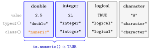

Atomic Data Types¶
Definition¶
Every value in R has a type. R has six basic atomic data types; four of them are used in this course:
- double (also called numeric): numbers with or without a fractional part, such as
2.5or2. A number typed without a suffix is stored as a double. - integer: whole numbers, written with the suffix
L, as in2Lor-3L. - logical: the values
TRUEandFALSE, written in capital letters; the missing valueNAis also logical. - character: text strings in single or double quotation marks, such as
'A'or"this is a string".
The other two types, complex and raw, are not needed here.
typeof(x) reports the storage type of x and class(x) its class; the two can differ, for example typeof(2) is "double" while class(2) is "numeric". The tests is.double(), is.integer(), is.logical(), is.character() and is.numeric() return TRUE or FALSE; the conversions as.numeric(), as.integer(), as.character() and as.logical() try to turn a value into the named type.
Interpretation¶
The type tells R what a value is and therefore what can be done with it: numbers can be added, logical values can be combined with and/or, text can only be compared or printed. R usually guesses the type from how you write a value, so 2 is a number, "2" is text and TRUE is a logical value.

Each box in the figure shows a literal value and what typeof() and class() return for it (Example 1). Only the double box has different answers: its storage type is "double", its class "numeric". The bracket under the first two boxes is the meaning of is.numeric(): it is TRUE for doubles and for integers, so use is.double() or is.integer() to tell them apart.
A double can hold any real number to about 15 significant digits, an integer only whole numbers, but both behave as numbers in arithmetic. The logical type is the computer's version of a yes/no statement; R treats TRUE as 1 and FALSE as 0 when it has to turn them into numbers (see Type Coercion), which later lets sum() count how often a condition holds. NA marks a missing value, and a factor is a separate structure for categories built on integer codes.
Common mistakes: writing true instead of TRUE (R then looks for an object called true), and treating the text "2" as the number 2, which makes arithmetic fail.
Key Results¶
- Numbers typed without a suffix are doubles:
typeof(2)is"double"andclass(2)is"numeric". The suffixLgives an integer:typeof(2L)is"integer". is.numeric()isTRUEfor both doubles and integers;is.double()andis.integer()separate them.- Logical values are
TRUE,FALSEandNA, in capital letters; R is case-sensitive. - Character strings may use single or double quotation marks;
"2"is text, not a number. as.*()functions convert explicitly; a value that cannot be converted becomesNA, with a warning in the case ofas.numeric()andas.integer().
Examples¶
1. Storage type and class.
typeof(2)
#> [1] "double"
class(2)
#> [1] "numeric"
typeof(2L)
#> [1] "integer"
typeof(TRUE)
#> [1] "logical"
typeof(NA)
#> [1] "logical"
a <- 'this is a string'
class(a)
#> [1] "character"
2. Testing a type.
int <- 10L
num <- 10
is.logical(int)
#> [1] FALSE
is.integer(num)
#> [1] FALSE
is.numeric(int)
#> [1] TRUE
is.numeric(num)
#> [1] TRUE
is.double(int)
#> [1] FALSE
10 without the suffix is a double, so is.integer(num) is FALSE even though the value is a whole number.
3. Converting explicitly.
as.integer(3.9)
#> [1] 3
as.character(2.5)
#> [1] "2.5"
as.numeric("12")
#> [1] 12
as.logical(0)
#> [1] FALSE
as.numeric("twelve")
#> [1] NA
#> Warning message:
#> NAs introduced by coercion
as.integer() drops the fractional part instead of rounding, and text that does not look like a number becomes NA.
4. Pitfalls: lower-case logical values and numbers stored as text.
true
#> Error: object 'true' not found
"2" + 1
#> Error in "2" + 1 : non-numeric argument to binary operator
as.numeric("2") + 1
#> [1] 3
true is read as the name of an object, and "2" is a character string. Converting the string first makes the addition work.
Prerequisites¶
Related Concepts¶
Sources¶
- Programming for EOR · Week 1
- Lecture script Data Types and Structures (Part 2), sections "Data Types" and "Detecting Types"
Aliases: data type, double, numeric, integer, logical, character, string, boolean, typeof(), class(), is.numeric(), as.numeric() Keywords: double and integer, logical values, character strings, typeof and class, is and as functions
Last updated: 10 November 2026 16:43
Atomic Data TypesAtomic VectorComparison OperatorsFactorListType CoercionObject and AssignmentFunction CallMissing ValuesReal Number